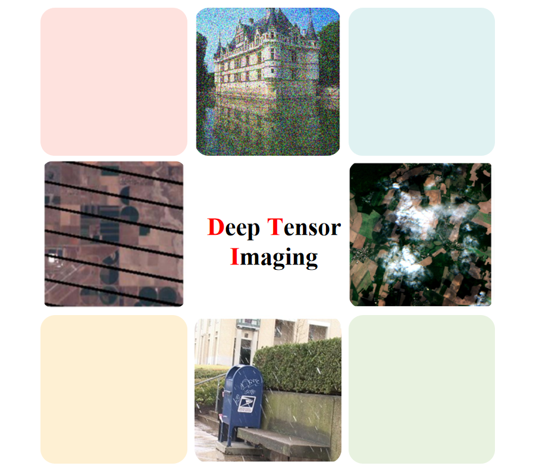

Experiences:
I am a Professor in the School of Mathematical Science at University of Electronic Science and Technology of China (UESTC).
In 2012, I received my Ph.D. in Applied Mathematics from UESTC, advised by Prof. Ting-Zhu Huang (黄廷祝 教授).
From 2013 to 2014, I worked as a post-doc with Prof. Michael Ng (吴国宝 教授) at Hong Kong Baptist University.
From 2016 to 2017, I worked as a visiting scholar Prof. Jose M. Bioucas Dias at Instituto Superior Técnico.
My research interest is image processing, computer vision, and machine learning.

Selected Publications:
Fundings:
National Natural Science Foundation of China (国家自然科学基金面上项目, NSFC 61876203), 2019-2022
National Natural Science Foundation of China (国家自然科学基金青年项目, NSFC 61402082), 2015-2017
Academic Activities:
Journal Reviewer:
SIAM Journal on Imaging SciencesInverse Problems and Imaging
Journal of Mathematical Imaging and Vision
Journal of Scientific Computing
IEEE Transactions on Image Processing
IEEE Transactions on Cyberneticss
IEEE Transactions on Signal Processing
IEEE Transactions on Geoscience and Remote Sensing
IEEE Transactions on Circuits and Systems for Video Technology
IEEE Transactions on Neural Networks and Learning Systems
IEEE Journal of Selected Topics in Applied Earth Observations and Remote Sensing
IEEE Journal of Selected Topics in Signal Processing
IEEE Geoscience and Remote Sensing Letters
Communications on Applied Mathematics and Computation
Information Fusion
Applied Mathematics Letters
Applied Mathematical Modelling
Journal of Computational and Applied Mathematics
Applied Mathematics and Computation
Journal of the Franklin Institute
Computers and Mathematics with Applications
Signal Processing
Information Science
Neurocomputing
Digital Signal Processing
Information Fusion
Information Science
Neurocomputing
Optics Express
Signal Processing: Image Communication
IET Computer Vision
IET Image Processing
PLOS ONE
Remote Sensing
Awards:
四川省自然科学一等奖
四川省科技进步一等奖
中国计算数学学会青年优秀论文竞赛二等奖
四川省学术和技术带头人后备人选
电子科技大学“校百人计划”
电子科技大学青年人才学术托举工程(交叉学科项目)
首届电子科技大学研究生优秀导学团队奖
Reproducible Research: